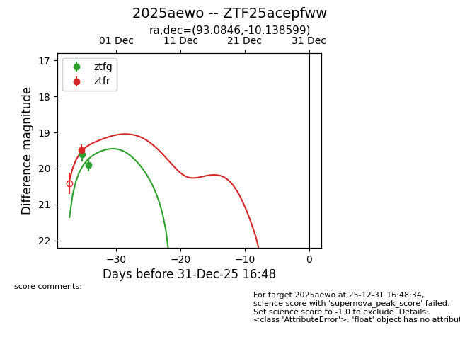
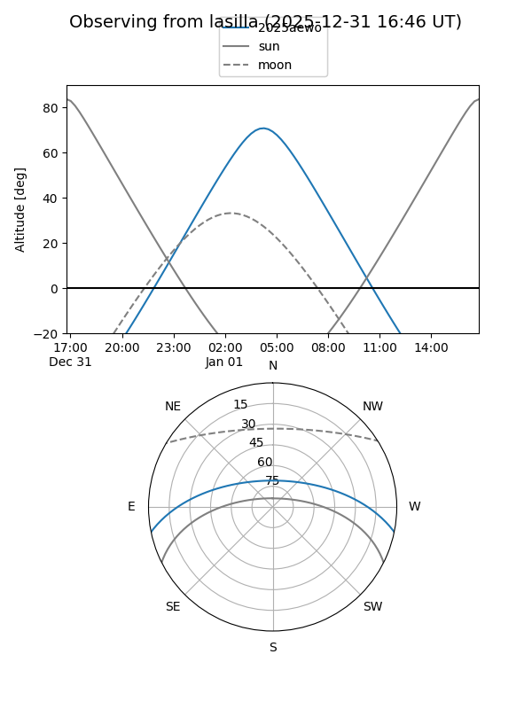
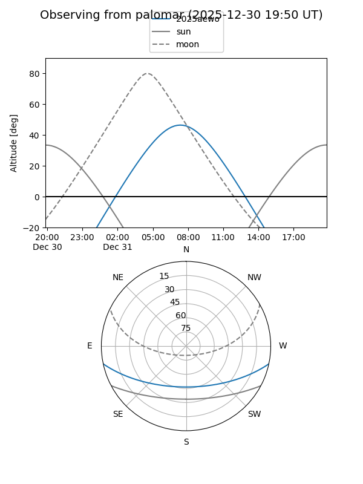
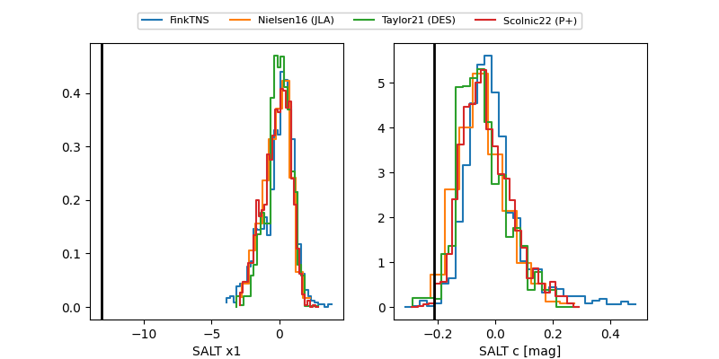

2025aewo
Target 2025aewo at 2025-12-31 16:59
Aliases and brokers:
FINK:
Lasair:
ALeRCE:
TNS:
YSE:
alt names
ZTF25acepfww (ztf,fink_ztf)
2025aewo (tns,yse)
Coordinates:
equatorial (ra, dec) = 93.0846,-10.13860
equatorial (HMS+DMS) = 06:12:20.30,-10:08:18.96
galactic (l, b) = (217.6731,-13.23866)
Flags:
Photometry:
last ztfg=19.90, ztfr=19.49
2 ztfg, 1 ztfr detections
Lightcurve

Visibility


Additional plots
